Практичні курси · журнал «ДентАрт» 2024 №4
Адгезивні мостоподібні конструкції передніх зубів
ADHESIVE DIRECT BRIDGE OF ANTERIOR TEETH
Навіть у давні часи, коли втрата зубів була явищем незворотним, люди намагалися хоч якимось чином компенсувати втрачений зуб. Такими були зубні протези, виготовлені в сьомому столітті до нашої ери (рис. 1). Виявлено докази, що перші протези були досить міцними і цілком годилися для жування грубої їжі. Своєчасне відновлення єдності зубного ряду веде до нормалізації естетики, функції та запобігає вторинній деформації.
Сьогодні існують чотири основні варіанти вирішення проблеми включеного дефекту зубного ряду малої протяжності у фронтальній ділянці:
- імплантація;
- непряма мостоподібна конструкція;
- адгезивна мостоподібна конструкція, виконана у напівпрямій чи прямій техніці;
- частковий знімний протез.
Кожен із цих методів має повне право на існування, вони широко використовуються у стоматологічній практиці, мають свої переваги і недоліки.
Але якщо подивитися в майбутнє, то вже найближчим часом стане можливим застосування новітнього методу протезування, який і буде найбільш доцільним з біологічної точки зору. Це перспективна біоінженерна технологія вирощування зубів, кінцевою метою якої є створення або відтворення повноцінних нових корінних зубів у людини. Вона поки що до кінця не вдосконалена і не перевірена клінічним застосуванням. Імовірно, це стане можливим у найближчому майбутньому (рис. 2, 3).
Чим більшою кількістю технологій володіє лікар-стоматолог, тим ефективніший вибір вирішення конкретного завдання. Доступні на сьогодні постійні, умовно-тимчасові або тимчасові конструкції є варіантами вибору за певних сприятливих клінічних умов у конкретних пацієнтів. Однак жоден з них – не панацея для вирішення проблеми включеного дефекту, найліпші імплантати – це власні зуби, і жоден матеріал – метал, кераміка чи композит – ніколи не замінить зубні тканини!
Поданий у цій статті прямий метод заміщення включеного дефекту пережив модифікацію в часі, від перших мерілендських мостів (1989–1990 рр.) на відлитій металевій балці – до сучасних адгезивних мостоподібних конструкцій1 з нанонаповненого композиту з опорою на скловолокно (2017 р.). Техніка удосконалювалася передусім клінічною практикою і підтверджується багаторічним практичним досвідом. Фотополімерні матеріали і армувальні елементи за останні десятиріччя здійснили величезний еволюційний ріст, що дозволило значно удосконалити клінічну технологію. У цій статті викладено основні клінічні умови для виготовлення таких конструкцій, технічні принципи і необхідні елементи конструкції, а також крок за кроком – протокол побудови у різних клінічних ситуаціях.
Щадне ставлення до здорових тканин зубів, можливість уникнути радикального препарування, проблем з крайовим приляганням і досягнення гарного естетичного результату з надійною стабілізацією і функціональністю конструкції роблять цей метод привабливим для клініцистів. Такі конструкції дозволяють повністю усунути або відтермінувати традиційні методи непрямого протезування, при яких відбувається велика втрата тканин опорних зубів. Вони можуть стати умовнотимчасовим або тимчасовим варіантом протезування на підготовчих чи проміжних етапах імплантації.2 Наявність альтернативної технології, яка дозволяє відновити включені дефекти зубних рядів без значного втручання в опорні зуби чи хірургічного етапу, розширює можливості для відновлення цілісності зубного ряду у тієї категорії пацієнтів, котрі з якихось причин не відважуються на імплантацію або не мають бажання жертвувати тканинами опорних зубів для непрямого протезування, а також не хочуть бути «щасливими» володарями часткового знімного протеза. Досвід свідчить, що половина наших пацієнтів обирає адгезивну мостоподібну конструкцію для протезування з фінансових міркувань, третина – зі страху перед операцією імплантації, і п'ята частина пацієнтів, які обрали цей метод, не хочуть жертвувати своїми тканинами під ортопедичні конструкції.3
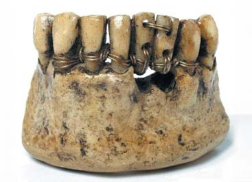
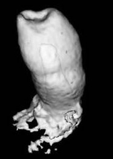
Вторинна адентія у фронтальній ділянці найчастіше є наслідком травм або невдалого ендодонтичного лікування, але й пацієнтів із вродженою адентією у нашій практиці зустрічається все більше, оскільки часто спостерігається процес редукції зубощелепного апарату, при якому природа прибирає функціонально менш значущі зуби – верхні бокові різці або другі премоляри, а також нижні різці. Адентія у фронтальній ділянці завжди є помітним естетичним дефектом, бо передні зуби відіграють важливу роль у формуванні естетики обличчя людини і їх завжди добре видно при розмові й усмішці. За адентії також відбуваються значні порушення функціонування зубощелепної системи, шлунково-кишкового тракту, погіршуються артикуляція і дикція, відбувається психологічна дезадаптація, що супроводжується зміною соціальної поведінки особи. Коли в зубному ряду відсутній зуб чи кілька зубів – втрачається його цілісність і рівномірність розподілу жувального навантаження. Відтак деякі зуби змушені працювати в умовах постійного перевантаження, що призводить до появи спочатку тріщин емалі, потім клиноподібних дефектів і тріщин з поширенням у дентин і до подальшого ще глибшого руйнування.4
Планування
Реставрація являє собою конструкцію, виконану фотополімерним матеріалом на основних складових елементах – скловолоконній балці, зафіксованій в опорних зубах, у спеціально підготовлених пропилах.
Побудова адгезивної мостоподібної конструкції має свої показання та застереження. Лише точне дотримання показань і протипоказань дозволяє звести до мінімуму невдачі й отримати стійкі позитивні естетичні та функціональні результати.
До початку побудови слід провести діагностику ситуації та планування, оцінити стан зубів, що обмежують дефект. Опорні зуби можуть бути як інтактними, так і з наявними дефектами, вітальними чи девітальними, але лише в тому випадку, якщо вони можуть сприйняти повноцінну адгезію прямої реставрації. За необхідності в опорних зубах робиться ревізія кореневих каналів і заміна старих пломб з повним відновленням анатомічної форми. На етапі планування слід перевірити оклюзійні взаємовідношення і положення зубів-антагоністів, визначитися з параметрами розмірів, колірної конструкції, прозорості та мікрорельєфу майбутньої реставрації.
У фронтальній ділянці всі зуби повинні мати пропорційні розміри, це потрібно для гармонійного вигляду усмішки в цілому. Вимірювання довжини переднього секстанта виконується штангенциркулем. Формула розрахунку пропорційності зубів дозволить визначити гармонійні розміри майбутніх реставрацій. У будь-якому випадку колатеральний зуб повинен мати гармонійне співвідношення 1:1 до відсутнього зуба з другого боку фронтальної ділянки. Для полегшення візуалізації майбутнього результату та інформування пацієнта можна вдатися до естетичного цифрового моделювання (рис. 4).
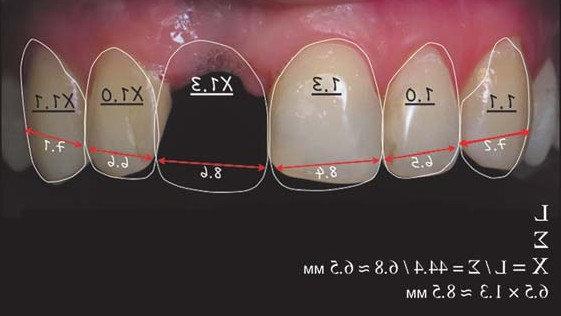
- При включених дефектах зубних рядів малої протяжності.
- За необхідності термінового заміщення відсутнього зуба з естетичною метою.
- Як тимчасове рішення на етапах імплантації.
- При відмові пацієнта від класичних ортопедичних методів відновлення.
- За необхідності в одночасному заміщенні дефекту зубного ряду та шинуванні у зв'язку із захворюваннями пародонта.
- Дефект великої протяжності (більше 2-х зубів).
- Значне руйнування опорних зубів, якщо тканини не здатні забезпечувати повноцінну адгезію.
- Патологічна стертість, низькі клінічні коронки.
- Рухливість опорних зубів.
- Бруксизм (парафункції).
- Поворот і значний нахил опорних зубів.
- Захворювання пародонта тяжкого ступеня.
Препарування
Виконання таких конструкцій – нескладне консервативне втручання з мінімальними обсягами втрачених тканин, перевага адгезивних мостоподібних конструкцій з композиту – незначна інвазія в опорні зуби. Депо під армувальні елементи балки виконуються в зубах з повністю відновленою формою коронок, введених у функціональну оклюзію. Незважаючи на незначний обсяг висічення твердих тканин, дизайн порожнини повинен бути продуманим. Найбільш раціональний тип препарування опорних зубів – виконання пропилів за типом класу II і III за Блеком. Рекомендовані умови при оперативній підготовці: анестезія, оптичне збільшення, обов'язкове водяне охолодження, оклюзійний контроль меж препарування і створення скосу емалі по периметру порожнин для збільшення площі склеювання з тканинами зуба. Важливо, щоб межі препарування не проходили по оклюзійних точках з антагоністами: ці зони максимальних функціональних циклічних навантажень – найслабше місце реставрації.
При препаруванні пропилів для поліпшення стабілізації армувальної балки враховуються три основних параметри, що характеризують їх дизайн і позицію на коронці зуба: протяжність, глибина і ширина (рис. 5–7).
Протяжність – це площа, яку займає простір для армувальної балки на жувальній (опорні премоляри) або оральній (опорні різці, ікла) поверхні коронки зуба. У мезіо-дистальному напрямку пропил не повинен заходити за середину коронки. Планувати глибину пропилу в опорних зубах слід таким чином, щоб у ділянках, що зазнають оклюзійного навантаження, безпосередньо над волокном був простір 1–2 мм об'єму композиту. Не можна допускати поверхневої фіксації волокна, щоб уникнути його розкриття під час інтеграції в оклюзії. Середина проксимальних зон по глибині повинна бути основним орієнтиром. І третій параметр – ширина – розраховується для комфортного позиціонування фрагментів балки. Не можна допускати точкового звуження зони контактів між опорними і штучними зубами, це може призвести до ослаблення опірності конструкції ротаційним впливам. Орієнтиром позиції середини ширини пропилу може служити планована точка контактного пункту в передніх зубах.
У рекомендованих параметрах на очищених опорних зубах можна зробити розмітку меж препарування м'яким олівцем.
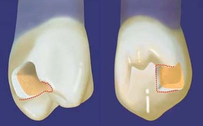
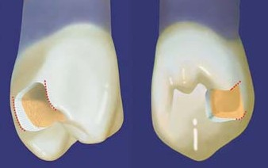
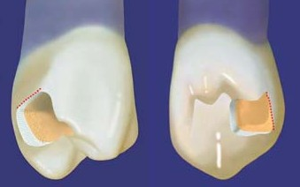
Потрібні аксесуари
Для побудови адгезивної мостоподібної конструкції після препарування і до адгезивної підготовки слід виконати кілька важливих підготовчих етапів. Адгезивний шлях протезування можливий лише за умови ізоляції робочого поля рабердамом, у фронтальній ділянці мінімальна рекомендована зона ізоляції – від премоляра до премоляра. На опорних зубах мають бути адаптовані клампи з однією дугою, наприклад КSК 22 або В4 Brinkеr (фото 1), або потрібно виконати підв'язування флосом шийки зубів для стабілізації латексної завіси у цій зоні та профілактики контамінації рідини з-під хустки.
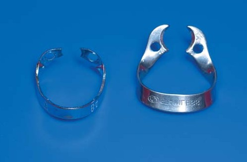
Також слід підготувати викрійку-шаблон у вигляді корду або штрипси для вимірювання довжини майбутніх фрагментів армувальної балки. З урахуванням контурів зуба, вестибулярного і орального вигинів у проміжній зоні робиться замірювання потрібної довжини майбутньої балки і відрізаються в заданих параметрах заготовки зі скловолокна. Фрагментів балки має бути мінімум два, це необхідно для біомеханічної стійкості конструкції до торсійних навантажень. Для впевненої стабілізації всієї конструкції один із фрагментів має підсилювати вестибулярну стінку, а другий – бути опорою орального периметру штучного зуба (фото 2–3).
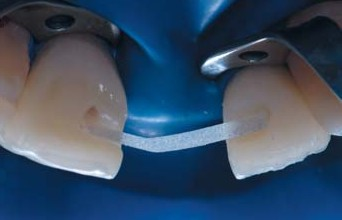
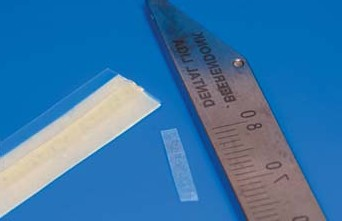
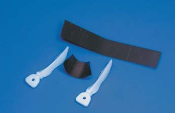
На підготовчих етапах слід подбати про наявність клинів для резервування простору для сосочків, а також жорсткої латунної матриці для основи штучного зуба, вирізаної у вигляді трапеції і вигнутої за формою екватора відсутнього зуба (фото 4). Позицію зеніту і форму екватора можна побачити у колатерального зуба з протилежного боку зубного ряду.
Для роботи зі скловолокном нам потрібні абсолютно чисті інструменти, якими ми зможемо витягти волокно, розділити його, відрізати необхідну заготовку для армування, адаптувати його до тканин зуба, захистити від передчасної полімеризації.
Адгезивна підготовка
Починаючи адгезивну підготовку, зверніть увагу на те, що емаль завжди слід протравлювати, навіть при використанні самопротравлювальних систем. Гарантія довговічності таких конструкцій – у міцному адгезивному з'єднанні всіх компонентів реставрації: власних тканин з адгезивною основою і перевірених у довговічному функціонуванні композитних та армувальних систем. У ролі адгезивного компонента впевнено почуваються спиртовмісні системи, такі як Prime&Bond Universal / Dentsply Sirona (фото 5). Вона може застосовуватися у всіх техніках протравлювання: тотального, самопротравлювання чи селективного протравлювання. Ці адгезивні системи характеризуються високою міцністю адгезивного з'єднання і довготерміновими результатами як на занадто вологому, так і на пересушеному дентині, що часто буває при побудові адгезивних конструкцій, адже необхідно провести обробку в підготованих порожнинах відразу двох опорних зубів одночасно. При цьому важливо забезпечити відсутність післяопераційної чутливості, що гарантується використанням таких адгезивних систем.
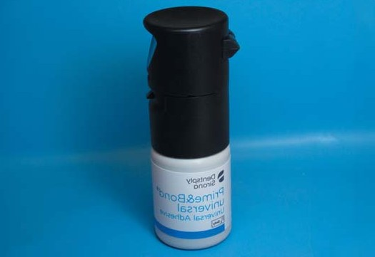
Армувальна балка
Композит – матеріал, стійкий до навантажень на стиснення, як бетон у будівництві, добре утримує задану форму, проте він недостатньо міцний до розтягування і згинальних зусиль.
Волокно – це матеріал з підвищеною стійкістю до розтягування і згинальних зусиль, як і металеві опорні балки в будівництві. З появою у 90-х роках на стоматологічному ринку армувальних матеріалів різних форм випуску і фірм прямі реставрації отримали розширені можливості в контексті довговічності і функціональності.5
Роль армувальної балки – стабілізація конструкції в опорних зубах і армування периметру штучного зуба. Адгезія між волокном і композитом – основний фактор, що визначає якість армованої конструкції.6 Довговічність і функціональність конструкції залежить від міцності армувального матеріалу. Найбільшу міцність (до 1300 МПа) мають скловолокна, наповнені композитною смолою промисловим способом. Для створення армувальної балки в адгезивних мостоподібних конструкціях у застосовуваній нами технології використовуються різні форми системи Dentapreg / АDM. Стрічки мають гарну еластичність і міцність, завжди готові до роботи, просочені адгезивними композитними смолами, легко моделюються, можуть бути застосовані для реставрації прямим, напівпрямим і непрямим методом. Волокна мають різне переплетення й орієнтацію, що дає можливість вибору і застосування у різних клінічних ситуаціях. Найоптимальніші і найзручніші для побудови адгезивних мостоподібних конструкцій у фронтальній ділянці такі форми випуску:
Стрічки Dentapreg Splint SFM/ADM мають орієнтацію волокон плетеного типу шириною 2 мм, товщиною 0,3 мм, міцність на згинання 480 МПа, модуль пружності 15 ГПа. Їх рекомендовано застосовувати в конструкціях, які не зазнають граничних навантажень, але вимагають мінімального препарування порожнини через дефіцит місця розміщення в розмірі коронки протезованого зуба, наприклад при заміщенні відсутнього верхнього латерального різця або одного з нижніх різців (фото 6).
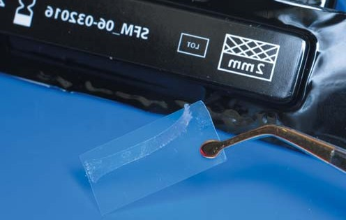
Односпрямовані балки Dentapreg Bridge PFU/ADM мають вищі міцнісні характеристики у порівнянні із системами Splint за рахунок значно більшої кількості мікроскловолокон на одиницю площі. Вони мають меншу еластичність і більшу жорсткість при адаптації, що дає перевагу їх вибору у випадках, де необхідна сильна фіксація, яка запобігає вертикальним рухам, за рахунок поздовжнього укладання скловолокон. Балка має ширину 3 мм, товщину 0,3 мм, міцність на згинання 1300 МПа, модуль пружності 15 ГПа. Рекомендоване застосування у конструкціях передніх зубів, які беруть участь у головних функціональних веденнях, наприклад при заміщенні відсутнього ікла або центрального різця (фото 7).
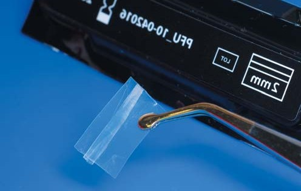
Механічне і хімічне з'єднання реставраційної основи – адгезивно підготовлених зубних тканин з фрагментами скловолокна – можливе лише за наявності композитного посередника – фіксатора фрагментів балки в депо. Для цієї ролі добре підходить мікрогібридний матеріал Spectrum TPH / Dentsply Sirona. Оскільки фіксація буде здійснюватися в дентинних обсягах, рекомендуємо вибирати композит з дентинних відтінків A3,5 опак. Кожен з двох фрагментів фіксується по черзі, спочатку вестибулярний фрагмент, потім оральний, з урахуванням вигинів периметру штучного зуба. Дизайн розташування та укладання фрагментів балки залежить від клінічного різновиду конструкції, в якій ділянці зубної дуги вона міститься (фото 8).
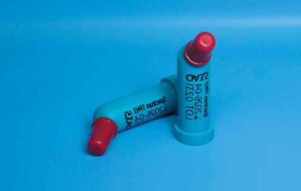
Клінічні різновиди мостоподібних конструкцій
Конструкція ПЕРЕДНІЙ – ПЕРЕДНІЙ – ПЕРЕДНІЙ
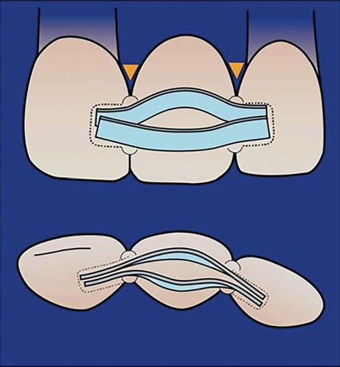
Відсутній центральний або бічний різець. Конструкція обмежена зубами тільки фронтальної ділянки, і при її побудові слід ураховувати, що ці зуби при функціонуванні отримують виражені трансверзальні навантаження в орально-вестибулярному напрямку. Опорні зуби мостоподібної конструкції відчувають максимальну напругу на розтягування, стискування і деформуються на вигин у пришийковій ділянці в зоні екватора.
Штучний проміжний зуб прикріплений до опорних зубів у зоні проксимальних контактних пунктів, у цій зоні будуть концентруватися основні навантаження на зуб під час функціонування, трансверзальні навантаження трансформуватимуться в торсійні (на прокручування).
Для стабілізації мостоподібної конструкції від навантажень прокручувального і згинального типу завжди потрібно використовувати армувальну балку з двох фрагментів. Вестибулярний і оральний фрагменти балки мають розташовуватися у вертикальній площині з розведенням по периметру відсутнього зуба.
Конструкція ПЕРЕДНІЙ – ПЕРЕДНІЙ – БОКОВИЙ
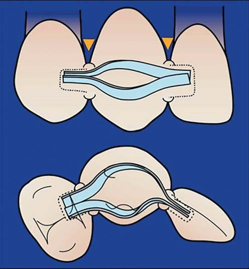
Відсутнє ікло. Конструкція включає зуби фронтальної (бічний різець) і бічної (перший премоляр) ділянок, протезоване ікло – функціонально значущий зуб, він бере участь в ікловому веденні при бічній оклюзії і є складовою ланкою малого ключа оклюзії. Відсутність кореня в штучному іклі у мостоподібній конструкції слід компенсувати міцними контактними з'єднаннями з більшою площею прикріплення. Особливість конструкції в тому, що вестибулярний фрагмент розташовується у вертикальній площині і фіксується в пропилах опорних латерального різця і першого премоляра лише у вертикальній площині, а оральний фрагмент має перехід по площині з вертикальної (в опорному різці) у горизонтальну (в опорному премолярі).
Побудова «порогів»
Після етапу фіксації всіх фрагментів балки беремося до пошарового відновлення цілісності опорних зубів з повним закриттям скловолоконних вкладок, наповнених композитом. Наступний важливий крок – захист балки в місці її виходу з опорних зубів, побудова «порогів». Додаткові обсяги композиту в контактних з'єднаннях є зміцнюючим і стабілізуючим елементом конструкції, вони ізолюють волокно з усіх боків муфтоподібно (фото 9–10).
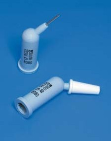
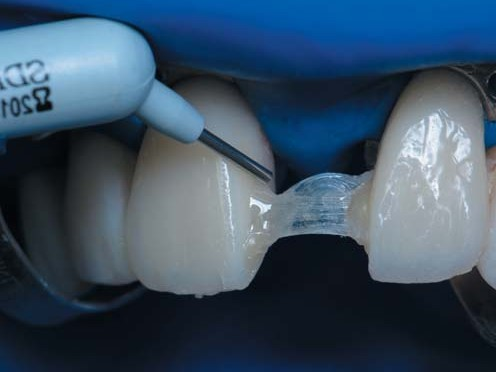
«Пороги» відіграють важливу роль, оскільки надають міцності контактним пунктам і поліпшують їх опір навантаженням на розтягування, стискання і згинальні зусилля. Для цих цілей рекомендовано використовувати текучі форми композиту, наприклад SDR / Dentsply Sirona, який має зручну форму комп'юли для внесення на піднутрення у зонах виходу волокна з опорних зубів. Унікальна здатність до самоадаптації та вирівнювання на поверхні робить його привабливим для цієї мети.7
Штучний проміжний зуб
Фінальний етап побудови мостоподібної конструкції – створення зуба. При його формуванні враховується, що анатомічна форма протезованого зуба, його морфологія, кольорова конструкція і розміри повинні вписатися в загальну гармонійну картину. Особливі вимоги ставляться до форми поверхні, зверненої до ясен, оскільки вона істотно впливає на навколишні тканини протезного ложа. Вона має бути виконана овоїдної форми тиснучого типу, зі щільним контактом на ясна альвеолярного відростка. Таким чином, конструкція має три точки опори: дві на опорних зубах і на альвеолярному відростку у проміжній приясенній зоні. Щільний тиснучий контакт на ясна сповільнюватиме атрофічні процеси у структурах пародонта. При певній стимуляції слизової оболонки ясен під час навантаження буде відбуватися формування ясенної зони навколо дотичної частини штучного зуба.
Підготовану спеціально вигнуту латунну матрицю у формі трапеції слід адаптувати під балкою з упором в «пороги» і зафіксувати її додатково клинами, резервуючи простір для сосочків. Дотримуючись біоміметичного принципу, штучний передній зуб реставруємо пошарово в топографії природних зубних тканин. На цій гладенькій і стабільній основі вклеюємо першу порцію композиту опакового відтінку білого кольору WO Esthet-X HD / Dentsply Sirona, порція має займати центральну частину в коронці у топографічних межах предентину, між балкою і матрицею – як основа штучного зуба. Для щільного прилягання до ясен основи після адаптації і моделювання цієї центральної порції під час світлоотвердіння матрицю слід з рівномірним зусиллям відтіснити з двох боків гладилками у бік ясен.
Далі відновлюємо у пошаровій техніці спочатку піднебінну стінку, а потім вестибулярну. Кожен топографічний шар має свій відтінок-імітатор. У біоміметичній реставрації8 використовуються відтінки наногібридного реставраційного матеріалу Esthet-X HD / Dentsply Sirona і мікрогібридного матеріалу Spectrum TPH / Dentsply Sirona (фото 11). Під час пластичної обробки порцій композиту особливу увагу слід звертати на склеювання конструкції в зоні контактних з'єднань, де очікуються значні навантаження.
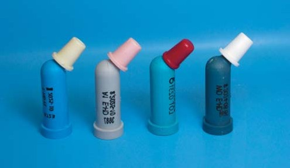
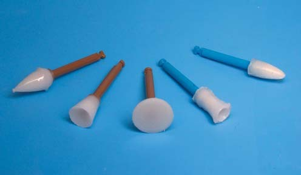
Фінішна обробка
Після закінчення реставрації і фінішної полімеризації усієї конструкції, до зняття рабердаму, слід провести обробку штрипсами зони конструкції, зверненої до ясен, і зони «порогів», це запобігатиме травмуванню слизової оболонки під час фінішної обробки. На полірування і шліфування цієї поверхні конструкції слід звертати особливу увагу. Запорукою відсутності запалення під таким мостом буде гладкість проміжного зуба, з боку ясен не повинно бути жодних ретенційних елементів, нависань, заглиблень, нерівностей. Поверхня має бути абсолютно сформованою і гладенькою. Після зняття латексної завіси обов'язковим етапом, який впливає на довговічність конструкції, є грамотна інтеграція реставрації в оклюзії, новий зуб повинен повноцінно вписуватися у функціональну оклюзійну картину пацієнта.
Для досягнення оптимальної форми і глянсового блиску конструкцію адгезивного моста треба фінішно обробити системою Enhance Mini / Dentsply Sirona (фото 12). Порожнистим конусом рекомендується опрацьовувати зони екватора і вертикальних амбразур, фінішна форма конус легко контурує і полірує піднебінну зону передніх зубів і елементи мікрорельєфу на вестибулярній поверхні, зони кутів і ріжучого краю добре моделюються формою диска. Для досягнення швидкого глянсового фінішного результату рекомендується дотримуватися основних правил роботи цією системою полірування: робота тільки з водяним охолодженням, при швидкості від 5000 до 10000 обертів за хвилину, по 5–10 с на кожній поверхні. Контактні поверхні і зону, звернену до ясен, також важливо зробити глянсовою, виконати якісне полірування цих зон можна пастами Prisma Gloss Extra Fine у комбінації із суперфлосом (фото 13).
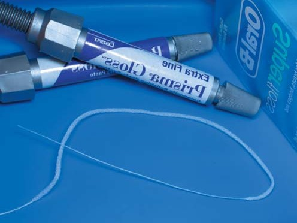
Клінічний приклад
Конструкція Передній – Передній – Передній. Відсутній центральний різець
Початкова ситуація
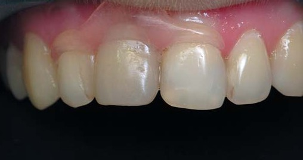
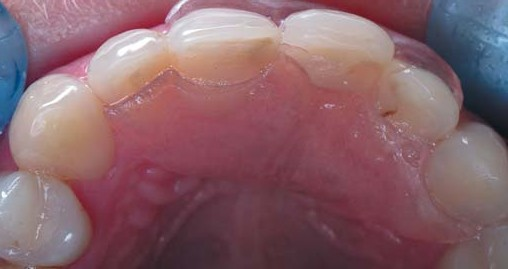
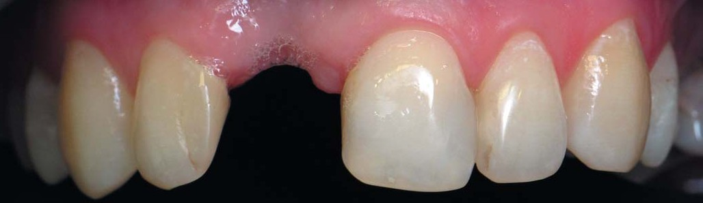
Підготовка опорних зубів
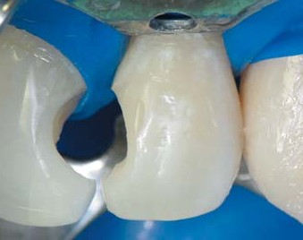
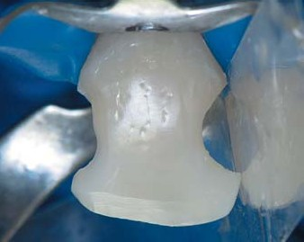
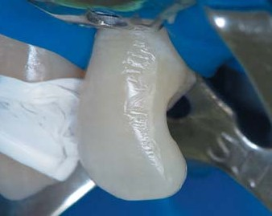
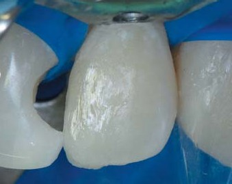
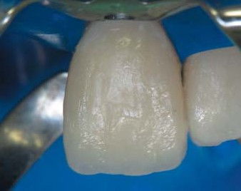
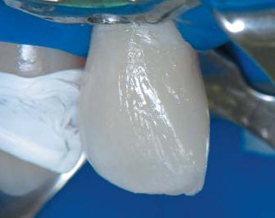
Фіксація армувальних елементів
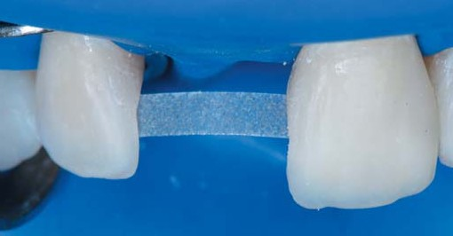
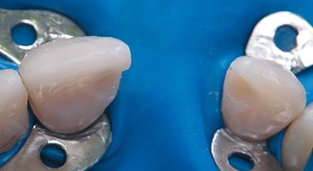
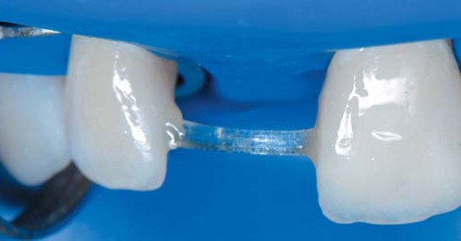
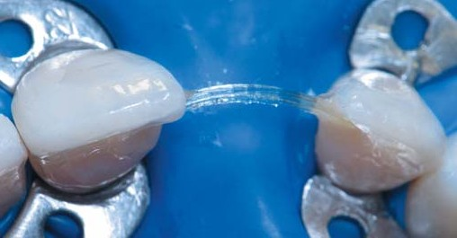
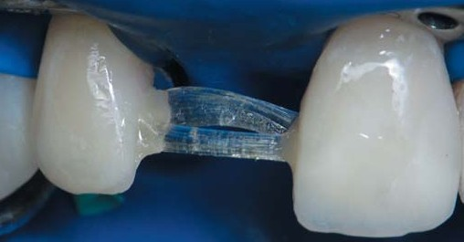
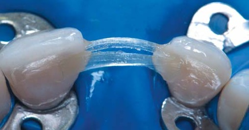
Побудова «порогів»
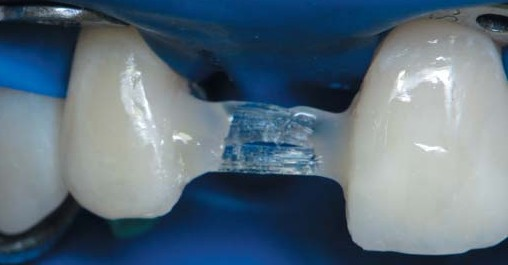
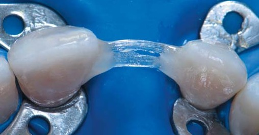
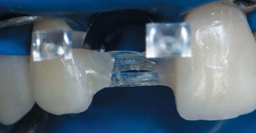
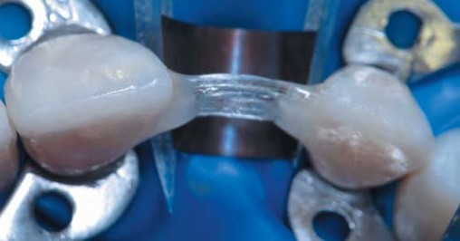
Реставрація штучного проміжного зуба
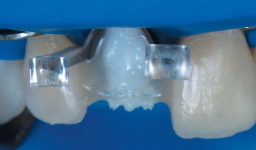
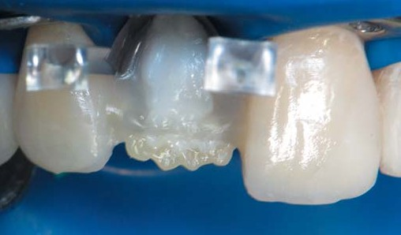
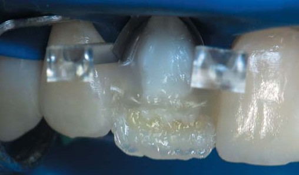
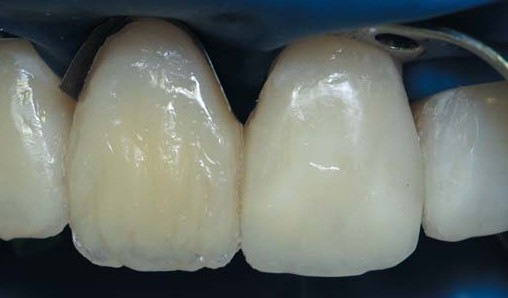
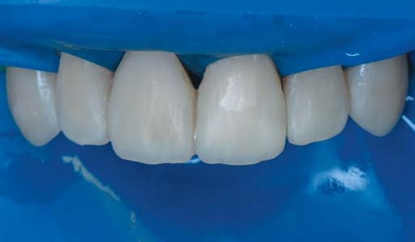
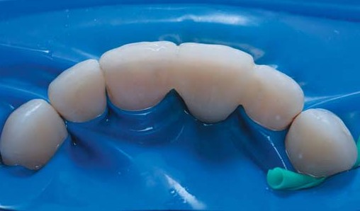
Клінічний результат
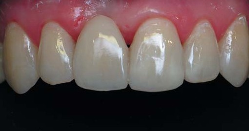
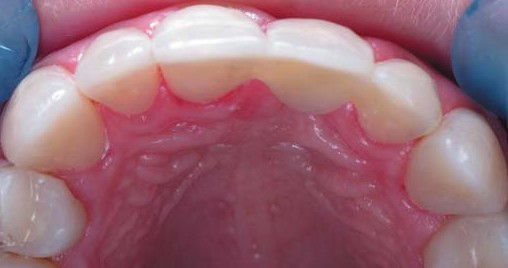
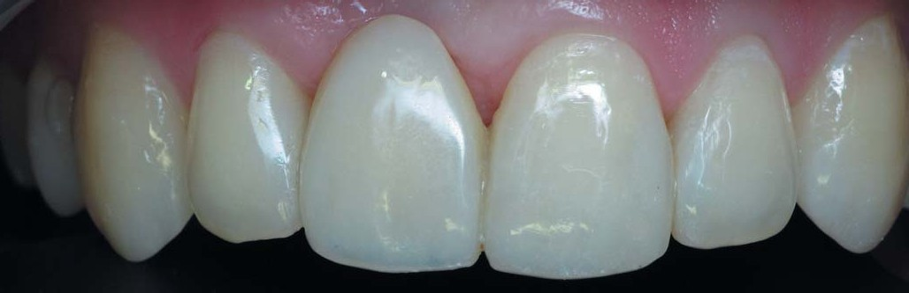
Висновки
У сучасній стоматології традиційно прийнято, що при включених дефектах зубного ряду у фронтальній ділянці установка імплантатів є найкращим варіантом відновлення цілісності зубних рядів. Важливо, що імплантація не завдає жодної шкоди сусіднім зубам, дозволяє заповнити будь-яку кількість відсутніх зубів, забезпечує гарний зовнішній вигляд. Однак імплантація далеко не завжди можлива, як наприклад, за наявності остеопорозу, атрофії кісткової тканини в зоні відсутнього зуба або незавершеного кісткового формування у молодих людей віком від 14 до 25 років. Для імплантації існують і протипоказання, пов'язані з деякими системними захворюваннями пацієнтів. У таких випадках адгезивні мостоподібні конструкції є предметом вибору лікаря-стоматолога і пацієнта в конкретній клінічній ситуації.
Якщо дотримуватися наведеного у статті алгоритму побудови таких конструкцій і не перевищувати показання, це дозволить за один візит і за відсутності лабораторного етапу з мінімальним втручанням в опорні зуби відновити як естетичну, так і функціональну цілісність зубного ряду. І неможливо порівняти, що краще: імплантація чи адгезивний міст, це абсолютно різні методи, кожен з яких має свої переваги і недоліки. Успіх, ефективність і довговічність результату цих методик буде визначатися в кожному окремому клінічному випадку за індивідуального підходу. Можливість повної оборотності адгезивних мостоподібних конструкцій без шкоди для пацієнта робить цей метод привабливим, адгезивний міст завжди можна замінити на імплантат, або на непряму конструкцію, або, у дуже недалекому майбутньому, замінити вирощеним біоінженерами новим зубом. На сьогодні методика, про яку йдеться у статті, – лише метод вибору за певних сприятливих клінічних умов.
Література
- Радлинский С. В. Адгезивные мостовидные конструкции // ДентАрт. – 1998. – № 2. – С. 28–40.
- Пономаренко О. В. Адгезивные мостовидные конструкции боковых зубов // ДентАрт. – 2012. – № 2. – С. 6–14.
- Ozcan M. Direct, inlay-retained, fiber-reinforced-composite restorations with two pontics: 5-year clinical follow-up. J Dent Res. 2008; 87 (Special Issue B): Abstract 1605.
- Кибенко И. М. Адгезивные мостовидные конструкции передних зубов // ДентАрт. – 2009. – №3. – С. 27–40.
- Пономаренко О. В. Стекловолоконное армирование прямых реставраций // ДентАрт. – 2015. – № 3. – С. 20–29.
- Пономаренко О. В. Адгезивные мостовидные конструкции боковых зубов // ДентАрт. – 2012. – № 3. – С. 6–14.
- Грютцнер А. Текучий композит ЭсДиАр – умный заменитель дентина // ДентАрт. – 2011. – № 3. – С. 57.
- Радлинский С. В. Реставрация конструкций переднего и бокового зубов // ДентАрт. –1996. – № 4. – С. 22–29.